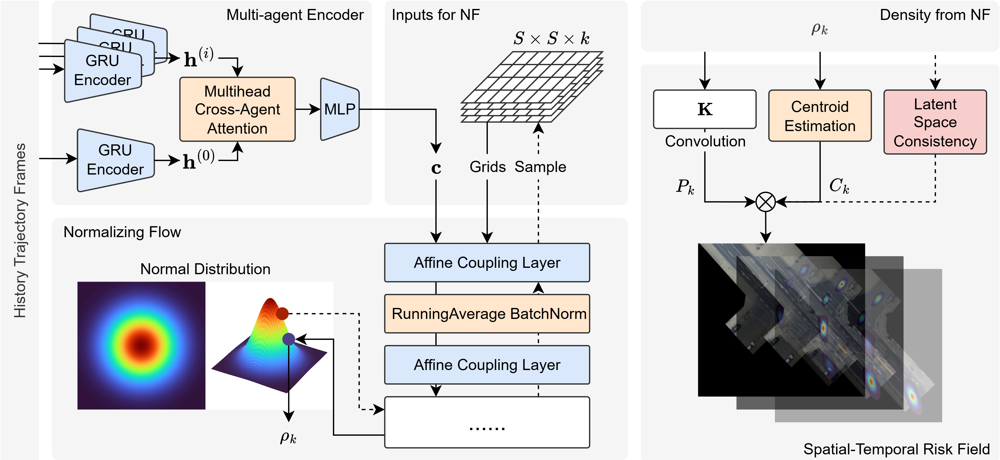
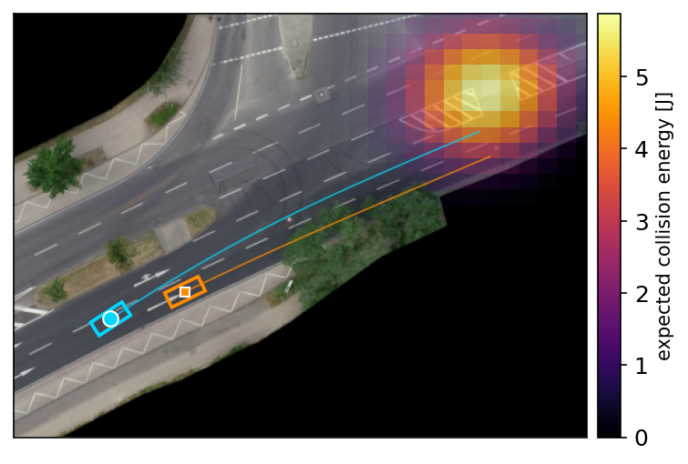
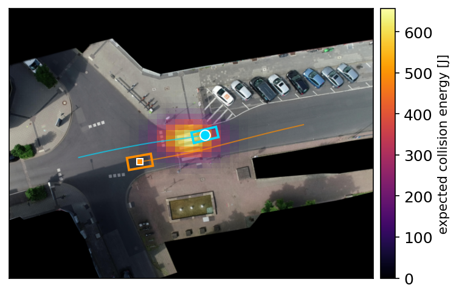
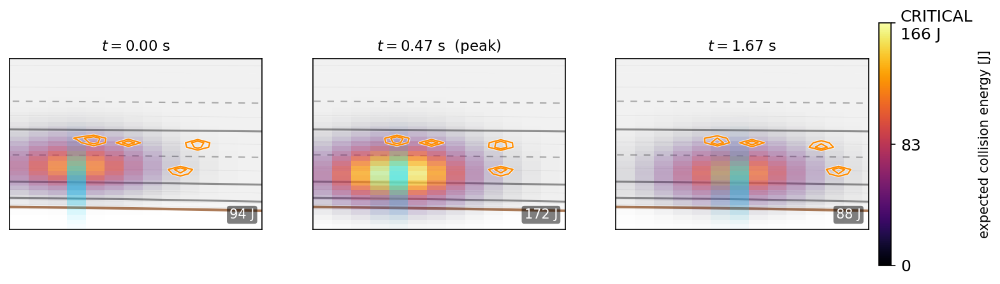
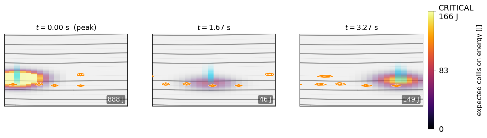

An ego-centric risk field that is predictive over time, temporally coherent, interpretable, and counterfactual — built on exact, grid-evaluable occupancy densities.
Project page · code & paper below
Safety assessment of autonomous vehicles needs risk representations that are predictive, temporally coherent, interpretable, and able to answer what-if questions about the ego's own decisions. We propose an ego-centric risk field built on world-model-conditioned normalizing flows: a deterministic latent state rolled over the horizon conditions an invertible flow, giving an exact, grid-evaluable occupancy density without sampling.
The field couples two flows — a single-target model for the ego's occupancy and a scene-level autoregressive joint for the surrounding agents conditioned on the ego — both conditioned on a bird's-eye map of the road. Per-cell risk is the ego occupancy × an oriented bounding-box meeting probability × a physically grounded kinetic-energy severity. On InD intersections and the congested-highway AD4CHE dataset, the field detects conflicts competitively-to-better than kinematic and occupancy-overlap baselines — with the largest margin in congested traffic — and supports a physically grounded counterfactual that fixed-plan methods structurally lack.

The field is shown at its peak-risk frame (intersections) and as an evolution strip (congested highway): the ego (cyan) drives onto near-static vehicles while the heat — expected collision energy in joules — rises above the per-dataset critical level.




From one observed frame, the model forecasts a horizon of risk that plays forward as the agents advance. Ego in cyan; all surrounding agents in orange; the inferno heat is the expected collision energy against the dataset's critical level.
Surrogate-conflict detection against a handcrafted kinematic safety field (DSF), a TTC baseline, and PORA-style occupancy-overlap on the same predicted densities. Higher is better; AP is the informative metric under the 8–13% class imbalance.
| Method | AUROC | AP |
|---|---|---|
| Ours (prob.) | 0.705 | 0.357 |
| DSF (handcrafted) | 0.584 | 0.148 |
| TTC | 0.580 | 0.151 |
| PORA-style | 0.641 | 0.224 |
| Method | AUROC | AP |
|---|---|---|
| Ours (prob.) | 0.716 | 0.324 |
| DSF (handcrafted) | 0.719 | 0.256 |
| TTC | 0.71 | 0.27 |
| PORA-style | 0.70 | 0.30 |
Our field wins the metrics that matter under imbalance — best AP and best early-warning lead on every label definition — with the largest margin in congested traffic, where constant-velocity assumptions break down. It is also the only method that yields a probabilistic field, a severity, and a physically grounded counterfactual.
@article{3drisk2026, title = {World-Model-Conditioned Normalizing Flows for Spatial-Temporal Risk Assessment of Autonomous Vehicles}, author = {RoboSafe Lab}, journal = {Preprint}, year = {2026} }